Usage Manual v1.0.0
SIM300 IO-Link Modbus TCP Server Usage Manual
A practical guide for service engineers, integrators, and operators who need to install, configure, operate, back up, and troubleshoot the SICK SIM300 IO-Link Modbus TCP Server application.

Start Here
Use this page as a step-by-step guide. Start with the videos for a quick visual overview, then follow the written sections when you need exact settings, field meanings, checks, or troubleshooting steps.
| Reader Need | Recommended Sections |
|---|---|
| First-time setup | Training Videos, Before You Start, Commissioning Workflow, Download And Install, Open The Web UI. |
| Daily operation | Main Page, Log Monitoring, Troubleshooting. |
| PLC or Modbus integration | Modbus Configuration, IO-Link Endpoints. |
| Service replacement or cloning | Backup And Clone Settings, System Checks, Troubleshooting. |
Contents
- Part 1 - Training Videos
- Part 2 - Understand The Application
- Part 3 - Choose The Correct Manual
- Part 4 - Prepare The Work
- Part 5 - Commission The System
- Part 6 - Download And Install
- Part 7 - Open The Web UI
- Part 8 - Understand The Screen
- Part 9 - Check Runtime Status
- Part 10 - Configure IO-Link Mappings
- Part 11 - Configure Modbus
- Part 12 - Operate The System
- Part 13 - Check Data Order
- Part 14 - Adjust Settings
- Part 15 - Review Logs
- Part 16 - Open Help Links
- Part 17 - Back Up And Clone
- Part 18 - Final System Checks
- Part 19 - Troubleshooting
- Reference - Glossary
- Reference - Release Notes
Part 1 - Training Videos
These videos demonstrate the main operating procedures for the application. Use them together with the written procedures in this manual.
| Name | Description | Video |
|---|---|---|
| Part 01 - Access and Sensor Setup | Open the Web UI, connect the sensor, verify port status, and upload the IODD file. | |
| Part 02 - IO-Link Data Mapping | Create process-data and ISDU endpoints, then verify their Modbus register values. | |
| Part 03 - Endpoint Management | Search, filter, update, disable, enable, and delete IO-Link endpoints; observe write logs and port controls. | |
| Part 04 - Modbus Configuration | Create and manage registers, reset configurations, update the Modbus server, and write ISDU values from a Modbus client. | |
| Part 05 - Settings and Monitoring | Update general and network settings, review logs, and open the Help page. | |
| Part 06 - Backup and Device Cloning | Download and upload PersistentData.bin to back up settings or clone a configured device. |
Part 2 - Understand The Application
The application runs on a SICK SIM300 device. It connects IO-Link data with a Modbus TCP server so that a PLC, SCADA system, or other Modbus TCP client can read from and write to selected IO-Link values.
The main idea is simple: create Modbus registers, create IO-Link endpoints, and link them together. Source endpoints move data from an IO-Link device into Modbus registers. Destination endpoints move Modbus write values back to an IO-Link device.
| Data Direction | What It Means | Typical Use |
|---|---|---|
| IO-Link to Modbus | The application reads a selected IO-Link value and updates a linked Modbus register. | A PLC reads sensor data from the SIM300 through Modbus TCP. |
| Modbus to IO-Link | The PLC writes to a linked Modbus register, and the application forwards the value to the IO-Link device. | A PLC sends a setting, command, or output value to an IO-Link device. |
| Task | Where To Do It |
|---|---|
| Check device, port, and server status | Main Page |
| Configure the Modbus TCP server | Modbus Configuration |
| Create Modbus register ranges | Modbus Configuration |
| Create IO-Link PD or ISDU mappings | IO-Link Endpoints |
| Set historian and log limits | Application Settings |
| Review runtime issues | Log Monitoring |
Part 3 - Choose The Correct Manual
Use the manual version that matches the application installed on the SIM300. This matters because page names, fields, limits, and validation behavior may change between application releases.
- Confirm the installed application version from the release package, AppManager, or project release record.
- Open the documentation version selector from Manual Versions.
- Select the manual version whose compatible app version includes the installed application version.
- If no matching manual exists, use the closest older manual only as a reference and verify against the actual UI.
| Manual Version | Compatible App Version | Compatible Firmware | Status |
|---|---|---|---|
| v1.0.0 | 1.1.0 | SIM300 firmware 1.2.0 | Current |
Part 4 - Prepare The Work
Confirm these items before commissioning or changing a configuration.
- The PC can reach the SIM300 IP address through the correct Ethernet interface.
- The SIM300 device is powered and visible in AppManager or SICK AppStudio/Sentio Creator tooling.
- The application package is installed and running on the SIM300.
- Required IO-Link sensors are physically connected to the intended SIM300 ports.
- IODD files for connected sensors are available when process-data or ISDU definitions must be selected.
- The target PLC or Modbus TCP client uses the same register plan and data order described in this manual.
Part 5 - Commission The System
Follow this sequence for a new installation or when rebuilding a configuration from zero. It keeps the work in an order that avoids creating mappings before the required sensor and IODD information is available.
- Install the application package on the SIM300.
- Connect the PC, SIM300, IO-Link devices, and PLC or Modbus TCP client to the intended network.
- Open the web UI and confirm that App Ready and Device are healthy.
- Check each IO-Link port on the Main Page and upload missing IODD files.
- Open Modbus Configuration and set the server port, Ethernet interface, connection limit, timeout, and enabled state.
- Create the Modbus registers needed by the PLC address plan.
- Open IO-Link Endpoints and create source endpoints for IO-Link values that the PLC must read.
- Create destination endpoints for values that the PLC must write back to IO-Link devices.
- Link each endpoint to a Modbus register with the correct quantity.
- Select Reload Apps after successful configuration changes when the UI asks for it.
- Use the PLC or a Modbus test client to read source registers and write destination registers.
- Check Recent Modbus Write Requests and Log Monitoring for confirmation or errors.
-
Back up
/public/CSK_PersistentData.binafter commissioning is accepted.
Part 6 - Download And Install
Install the AppSpace application package on the SIM300 before opening the web UI.
Download The Application Package
Download the official application package from SICK AppPool:
Open SIM300 IO-Link Modbus TCP Server application package in SICK AppPool
- Open the AppPool link in a browser.
- Sign in with a SICK account if AppPool asks for authentication.
- Download the application package for the compatible app version listed by this manual.
- Save the package to a known local folder on the service PC.
- Keep the downloaded file name and version information with the commissioning record.
Install On SIM300
- Open AppManager or Sentio Creator.
- Scan for the target SIM300 device.
- Select the SIM300 device.
- Select the downloaded application package.
- Install the application package on the SIM300.
- Wait until installation finishes and the application is running.
Part 7 - Open The Web UI
Open a browser such as Google Chrome or Microsoft Edge and enter:
http://<device-ip-address>:8080/#/home?msdd=App.msddExample used while preparing this manual:
http://192.168.0.100:8080/#/home?msdd=App.msddIf the SICK login page appears, sign in with a permitted user account. After login, the web UI opens the Main Page.
Part 8 - Understand The Screen
The web UI uses a fixed header and page area. The menu icon opens the side navigation. The status chips in the header give a quick runtime check before you start changing settings.
| Header Item | Meaning |
|---|---|
| App Ready | The application is ready for normal operation. |
| Modbus Server | The embedded Modbus TCP server is running or stopped. |
| Device | The SIM300 device connection is available. |
| Reload Apps | Reloads AppSpace apps after configuration changes that require a reload. |
| Language icon | Switches the display language. |
Part 9 - Check Runtime Status
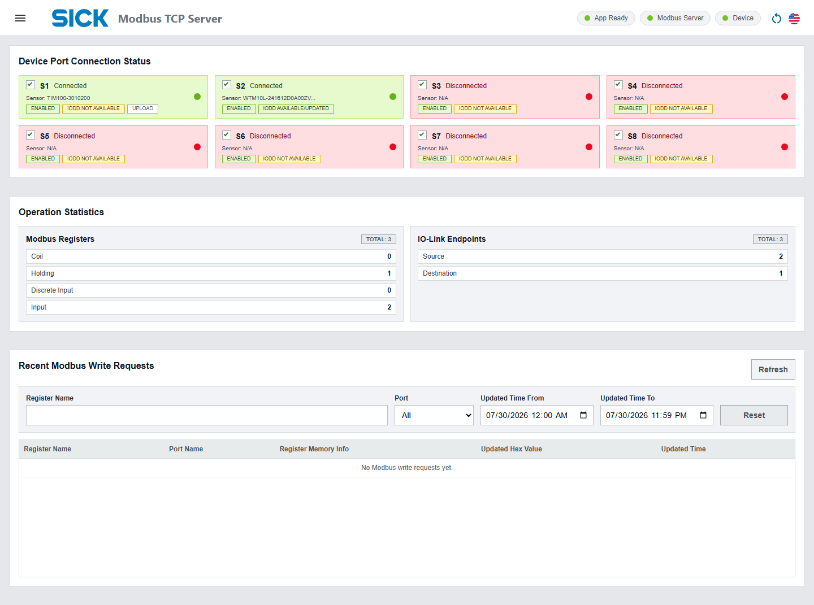
Device Port Connection Status
Use this panel first during commissioning. It shows whether each SIM300 IO-Link port is enabled, connected, and supported by an IODD file.
| Field | How To Use It |
|---|---|
| Enabled checkbox | Turns the selected port on or off after confirmation. |
| Connected / Disconnected | Shows whether a sensor is detected on the port. |
| Sensor | Shows the detected sensor name, or N/A if no device is available. |
| IODD status | Shows whether usable IODD metadata is available for the connected sensor. |
| Upload | Opens the IODD Interpreter page when a connected sensor needs an IODD file. |
Operation Statistics
This area summarizes the configured Modbus registers and IO-Link endpoints. Use it as a quick check after creating or deleting mappings.
Recent Modbus Write Requests
This table shows write requests received by the Modbus server. It is useful when checking whether a PLC is writing to the expected register and whether the value is reaching the application.
| Filter Or Column | Description |
|---|---|
| Register Name filter | Shows only rows matching a register name keyword. |
| Port filter | Shows rows related to the selected IO-Link port. |
| Updated Time From / To | Limits the history to a selected time range. |
| Updated Hex Value | Shows the received write payload in hexadecimal form. |
| Updated Time | Shows when the write request was recorded. |
Part 10 - Configure IO-Link Mappings
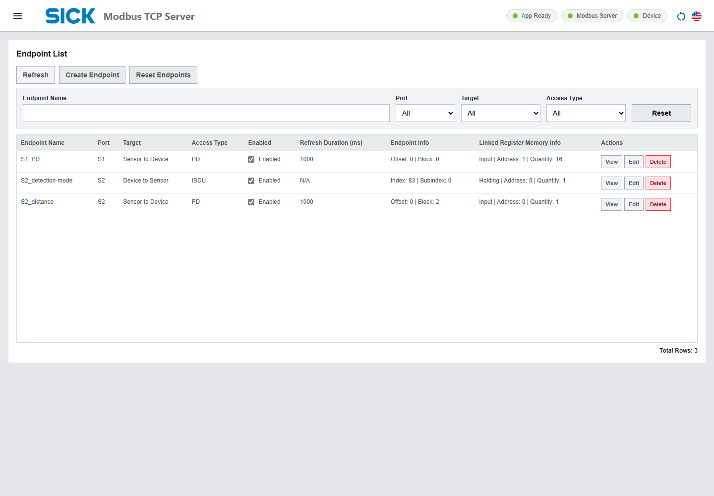
An endpoint tells the application which IO-Link value to read or write. An endpoint may use Process Data or ISDU access. It can be linked to a Modbus register so that external Modbus clients can access that IO-Link value.
| Field | Meaning |
|---|---|
| Endpoint Name | Operator-friendly name for the mapping. |
| Port | SIM300 IO-Link port, normally S1 to S8. |
| Target | Direction of the data flow, Sensor to Device or Device to Sensor. |
| Access Type | Process Data or Indexed Service Data Unit. |
| Enabled | Controls whether the endpoint participates in runtime operation. |
| Refresh Duration | Polling interval in milliseconds for Sensor to Device endpoints. For Device to Sensor endpoints that read or write Process Data OUT or ISDU values, the polling cycle time is fixed at 5000 ms. |
| Endpoint Info | Process-data offset/block or ISDU index/subindex information. |
| Linked Register Memory Info | The Modbus register linked to this endpoint. |
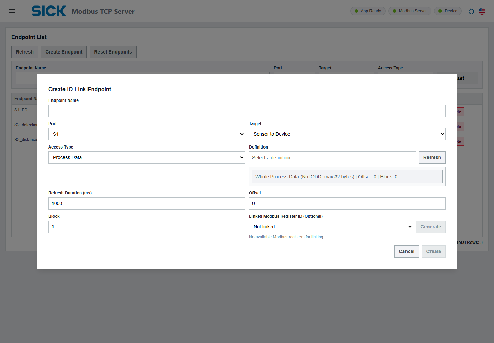
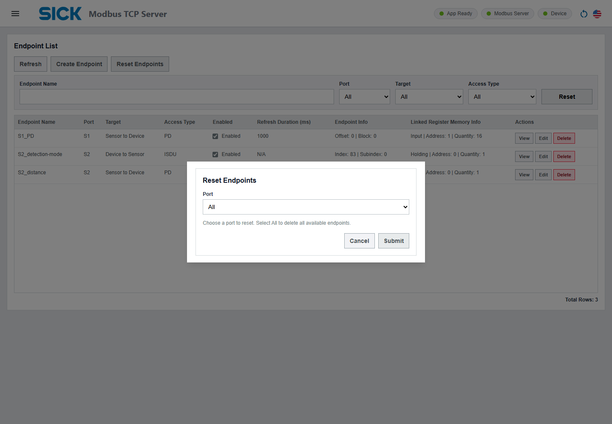
Prepare IODD Files
Upload the correct IODD file before creating endpoints for a connected sensor. Without IODD metadata, the application may not be able to show valid Process Data or ISDU definitions.
You can open the IODD Interpreter directly with this URL:
http://<device-ip-address>:8080/#!msdd=CSK_Module_IODDInterpreter&page=IODDInterpreterExample:
http://192.168.0.100:8080/#!msdd=CSK_Module_IODDInterpreter&page=IODDInterpreter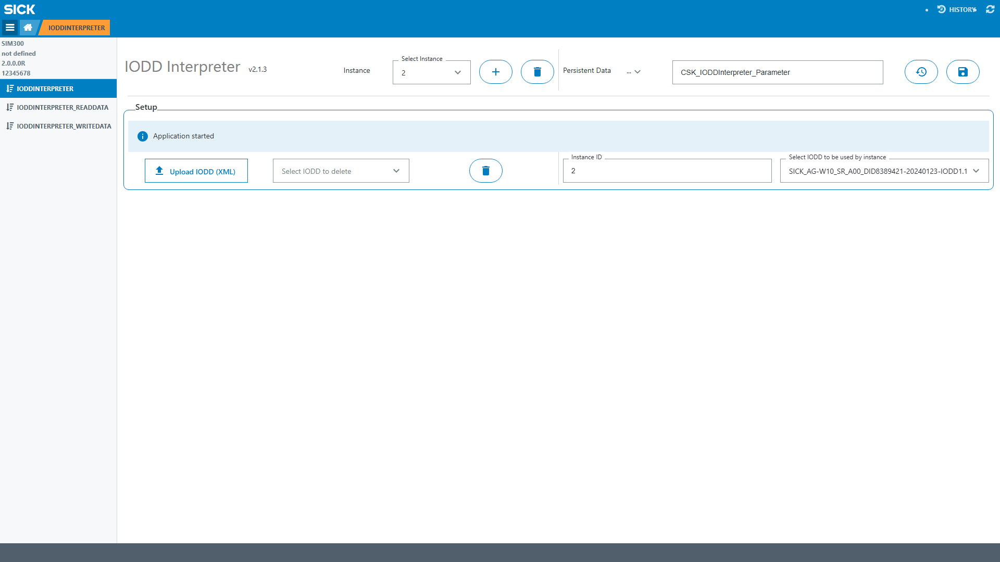
- Open the IODD Interpreter page from the direct URL, the Upload link on the Main Page, or the platform menu.
- Sign in if the SICK login page appears.
- Select Upload IODD or Upload IODD XML.
-
Select the correct IODD
.xmlfile for the sensor connected to the SIM300 port. - Wait until the upload finishes and the IODD is listed or accepted by the page.
- Return to the SIM300 IO-Link Modbus TCP Server application.
- Open the Main Page and confirm that the related port changes to IODD Available/Updated.
- Open IO-Link Endpoints and refresh definitions if the endpoint form was already open.
Create An Endpoint
- Open IO-Link Endpoints.
- Select Create Endpoint.
- Enter an endpoint name.
- Select Port, Target, and Access Type.
- Select a Process Data or ISDU definition from the definition browser.
- For Sensor to Device endpoints, set the refresh duration. Use 50 ms or higher unless the project has a tested reason to use a different value.
- For Device to Sensor endpoints used for Process Data OUT or ISDU read/write access, note that the polling cycle time is fixed at 5000 ms.
- Select an existing linked Modbus register, or use Generate to create a compatible register.
- Check the quantity validation message.
- Select Create.
- Reload apps if the success notification asks for it.
View, Edit, Delete, Reset, Or Enable Endpoints
| Task | Procedure |
|---|---|
| View endpoint details | Find the endpoint in the list, select View, and review port, target, access type, endpoint info, refresh duration, enabled state, and linked register information. |
| Edit endpoint | Select Edit, update the required fields, confirm linked register validation, select Save, and reload apps if requested. |
| Enable or disable endpoint | Use the checkbox in the Enabled column, review the confirmation prompt, and select Send to confirm. |
| Delete endpoint | Select Delete, review the confirmation prompt, and select Send to confirm. |
| Reset endpoints by port | Select Reset Endpoints, choose the target port, select Submit, and reload apps if requested. |
| Reset all endpoints | Select Reset Endpoints, keep All selected, select Submit, and reload apps if requested. |
Part 11 - Configure Modbus
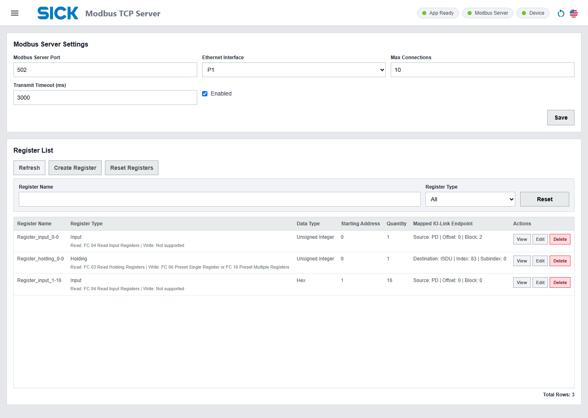
Modbus Server Settings
These settings define how external Modbus TCP clients connect to the SIM300.
| Field | Recommended Use |
|---|---|
| Modbus Server Port | TCP port used by the server. Typical Modbus TCP port is 502. Allowed range is 1 to 65535. |
| Ethernet Interface | Selects the SIM300 Ethernet interface, for example P1 or P2. |
| Max Connections | Maximum simultaneous Modbus client connections. Typical starting value is 10. Allowed range is 1 to 1000. |
| Transmit Timeout (ms) | Modbus communication timeout. Typical starting value is 3000 ms. Allowed range is 100 to 60000 ms. |
| Enabled | Enables or disables the Modbus TCP server. |
| Save | Saves the server settings. Reload apps when the success notification asks for it. |
Register List
A Modbus register entry defines a visible Modbus memory area. Register ranges must not overlap within the same register type.
| Action | What It Does |
|---|---|
| Refresh | Reloads the register list from the device. |
| Create Register | Opens the register creation form. |
| Reset Registers | Deletes all registers or all registers of a selected type. |
| View | Opens details and lets you read the current register value. |
| Edit | Changes an existing register definition. |
| Delete | Deletes one register after confirmation. |
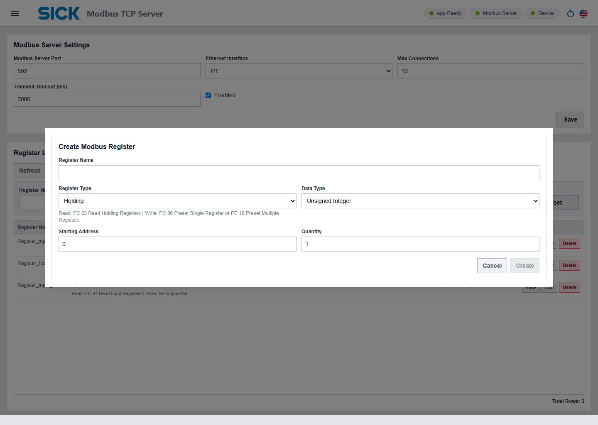
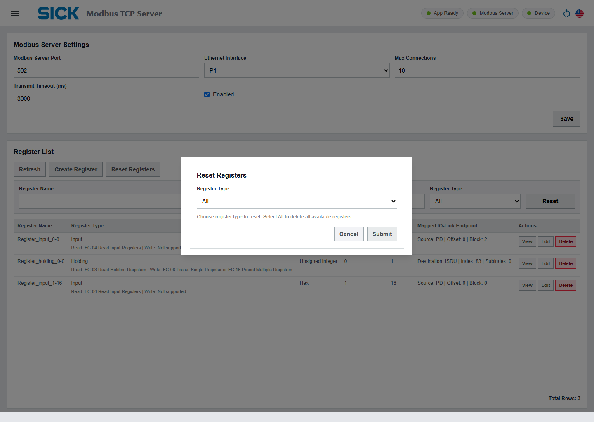
Create A Modbus Register
- Open Modbus Configuration.
- Select Create Register.
- Enter a clear register name.
- Select the register type and data type.
- Enter the starting address and quantity.
- Confirm that the range does not overlap an existing register of the same type.
- Select Create.
- Reload apps if the success notification asks for it.
View Or Read A Register
- Open Modbus Configuration.
- Use Register Name or Register Type filters to find the target register.
- Select View.
- Review register type, data type, start address, quantity, and linked endpoint.
- Select the read format: Decoded by Data Type or Hex Value.
- Select Read Value to read the current register value.
Edit, Delete, Or Reset Registers
| Task | Procedure |
|---|---|
| Edit one register | Find the register, select Edit, change the required fields, select Save, and reload apps if requested. |
| Delete one register | Find the register, select Delete, review the confirmation prompt, and select Send to confirm. |
| Reset registers by type | Select Reset Registers, choose a register type, select Submit, and reload apps if requested. |
| Reset all registers | Select Reset Registers, keep All selected, select Submit, and reload apps if requested. |
Function Code Support
| Register Type | Supported Modbus Function Codes |
|---|---|
| Coil | Read: FC 01 Read Coils. Write: FC 15 Force Multiple Coils. |
| Discrete Input | Read: FC 02 Read Discrete Inputs. Write: not supported. |
| Holding Register | Read: FC 03 Read Holding Registers. Write: FC 06 Preset Single Register or FC 16 Preset Multiple Registers. |
| Input Register | Read: FC 04 Read Input Registers. Write: not supported. |
Part 12 - Operate The System
During normal production use, operators usually do not need to change register or endpoint definitions. The most common tasks are checking status, confirming data exchange, and reacting to alarms or missing communication.
Start-Of-Shift Check
- Open the Main Page.
- Confirm App Ready is green.
- Confirm Modbus Server is green when the PLC should communicate with the application.
- Confirm Device is green.
- Check that required IO-Link ports are connected and enabled.
- Check that required ports show IODD Available/Updated.
- Review Recent Modbus Write Requests if destination writes are expected from the PLC.
After Configuration Changes
Many changes are saved first and only become active in runtime after the application reloads. When the UI shows a success message asking for reload, select Reload Apps before testing with the PLC.
| Change | Recommended Follow-Up |
|---|---|
| Modbus server settings | Reload apps, then reconnect the Modbus client. |
| New, edited, deleted, or reset Modbus registers | Reload apps, then verify reads and writes from the Modbus client. |
| New, edited, deleted, reset, enabled, or disabled endpoints | Reload apps, then verify linked register values and IO-Link behavior. |
| Application settings | Reload apps if requested by the success notification. |
| Uploaded backup settings file | Reload apps before checking the restored configuration. |
Change-Control Recommendation
For service work, record the Modbus register plan, endpoint list, connected sensor types, and IODD file versions before and after changes. This helps another engineer understand why each PLC address is mapped to a specific IO-Link value.
Part 13 - Check Data Order
Use this section when configuring a PLC, SCADA system, or test client to read and write multi-byte values correctly.
| Data Area | Order Used By The Application |
|---|---|
| Holding and Input registers | Big-endian byte order inside each 16-bit register. Multi-register values use high word first. |
| 32-bit example |
0x11223344 maps as register N =
0x1122, register N+1 = 0x3344.
|
| Float32 | Big-endian packing and unpacking. |
| IO-Link process data | Raw process-data byte order is kept as received from IO-Link. Mapping uses byte offset and block, with no byte swap or word swap. |
| Values fitted to register size | Shorter values are left-padded. Longer values keep least-significant bytes for big-endian numeric behavior. |
| Coils and Discrete Inputs | Coil bytes follow Modbus bit order, LSB-first within each byte. The UI/logical binary representation remains MSB-style. |
Part 14 - Adjust Settings
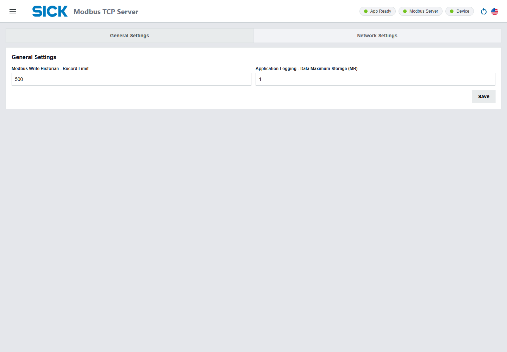
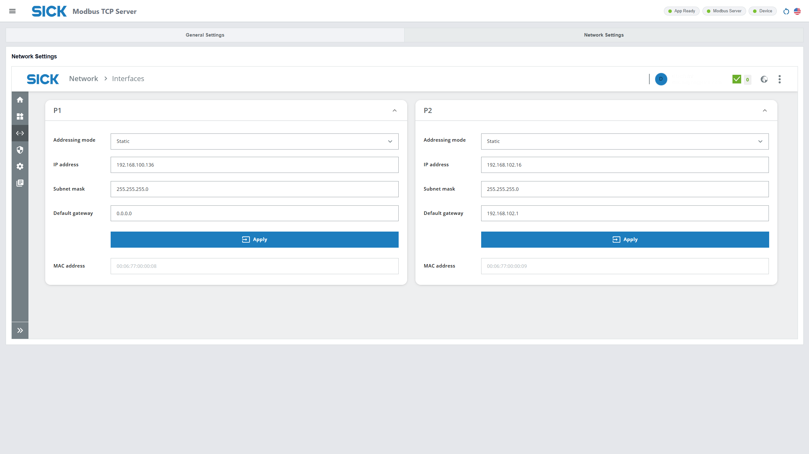
| Setting | Purpose |
|---|---|
| Modbus Write Historian - Record Limit | Maximum number of stored write request records. Allowed range is 0 to 10000. A practical starting value is 500 records. |
| Application Logging - Data Maximum Storage | Maximum storage for application logs. Allowed range is 0 to 10 MB. A practical starting value is 1 MB. |
| Network Settings | Embedded Device Control Center page for network interface settings. |
Part 15 - Review Logs
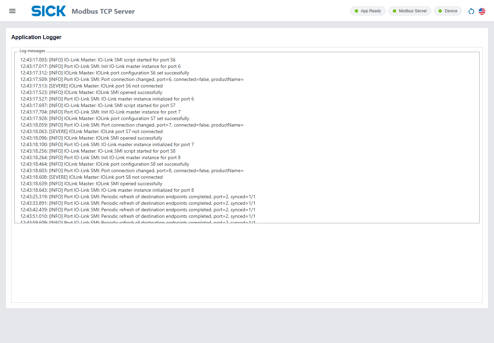
Use this page when the Main Page shows that the application is not ready, the Modbus server is stopped unexpectedly, endpoint creation fails, or write requests do not behave as expected.
Part 16 - Open Help Links
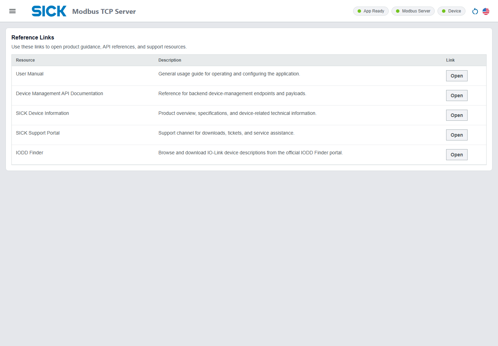
The Help page provides reference links for the user manual, device management API documentation, SICK device information, the SICK support portal, and the IODD Finder.
Part 17 - Back Up And Clone
Use the SIM300 File Manager when you need to back up the current configuration or copy the same settings to another SIM300 device.
The persistent configuration file is:
/public/CSK_PersistentData.binDownload A Backup
- Open File Manager from the SIM300 platform menu.
- Go to the
/publicfolder. - Select
CSK_PersistentData.bin. - Select Download and save the file to the local PC.
Clone Settings To Another Device
- Confirm the target SIM300 uses the same application version and a compatible firmware environment.
- Open App Manager or Sentio Creator application on the PC.
- Select the target SIM300 device.
- Stop all apps.
- Open the App data tab.
- Go to the
/publicfolder. -
If
CSK_PersistentData.binalready exists, delete it first. - Upload the backup
CSK_PersistentData.binfile. - Start all apps again.
Part 18 - Final System Checks
| Parameter | Value Or Check |
|---|---|
| Compatible application version for this manual | 1.1.0 |
| Compatible SIM300 firmware | 1.2.0 |
| Recommended minimum IO-Link data polling cycle | 50 ms |
| Device to Sensor Process Data OUT or ISDU polling cycle | Fixed at 5000 ms |
| Maximum write historian entries | 10000 records |
| Application log storage range in current UI | 0 to 10 MB |
After adding many registers or endpoints, open the SIM300 Dashboard and review CPU usage, memory, storage, and temperature. This check is useful before placing a large configuration into long-term operation.
Part 19 - Troubleshooting
Start troubleshooting from the Main Page. It shows the fastest status indicators for the app, Modbus server, SIM300 device connection, and IO-Link ports. Then use Log Monitoring for details.
| Symptom | Possible Cause | Recommended Action |
|---|---|---|
| Web page cannot be opened | Wrong IP address, wrong network interface, cable issue, or device not reachable. | Check PC network settings, SIM300 IP address, Ethernet cable, and browser URL. |
| Login page opens but app page does not load | User is not signed in or does not have access. | Sign in with a permitted account, then reopen the application URL. |
| App Ready is not healthy | Application startup or initialization problem. | Open Log Monitoring, check recent errors, then reload apps or restart the application if required by local service procedure. |
| Modbus Server is stopped | Server disabled, invalid server settings, selected Ethernet interface unavailable, or startup failure. | Open Modbus Configuration, confirm Enabled, port, interface, max connections, and timeout. Save and reload apps. |
| PLC cannot connect | Network route, firewall, wrong Modbus port, server disabled, or maximum connection limit reached. | Ping the SIM300, verify the Modbus server port, check Max Connections, and confirm the PLC uses the correct SIM300 IP/interface. |
| Port shows Disconnected | Sensor not connected, cable issue, wrong port, or IO-Link communication problem. | Check the physical connection, sensor power, and correct SIM300 port assignment. |
| IODD Not Available | IODD file missing or not matching the connected sensor. |
Use Upload or open
http://<device-ip-address>:8080/#!msdd=CSK_Module_IODDInterpreter&page=IODDInterpreter, upload the correct IODD XML file, then refresh or reload as
needed.
|
| Endpoint definition list is empty | No valid IODD metadata for the selected port, target, or access type. | Confirm the sensor is connected, IODD is available, and the selected Target and Access Type are valid for that device. |
| Cannot save endpoint with linked register | Linked register quantity does not match the quantity required by the endpoint, or the register is already linked to another endpoint. | Select Generate where available, or create a register with the exact required quantity and no existing endpoint link. |
| Modbus values appear byte-swapped or word-swapped in PLC | PLC interpretation does not match the application data order. | Configure the PLC for big-endian bytes and high-word-first multi-register values. See Data Order. |
| Recent write requests stay empty | No PLC writes received, wrong register address, unsupported register type, or historian filter hides rows. | Clear filters, check PLC write address/type, and confirm the destination endpoint is linked and enabled. |
Reference - Glossary
| Term | Meaning In This Manual |
|---|---|
| SIM300 | SICK device that runs the AppSpace application. |
| AppSpace application | The installed application package that provides Modbus TCP and IO-Link bridge functions. |
| Modbus TCP server | The server running on SIM300 that external Modbus TCP clients connect to. |
| Modbus register | A configured Modbus memory range exposed by the application. |
| IO-Link endpoint | A configured IO-Link value access point, using Process Data or ISDU. |
| Source endpoint | Endpoint that moves IO-Link data into a Modbus register. |
| Destination endpoint | Endpoint that receives Modbus writes and forwards them to IO-Link. |
| PD | Process Data, cyclic IO-Link data. |
| ISDU | Indexed Service Data Unit, acyclic IO-Link parameter data addressed by index and subindex. |
| IODD | IO Device Description file that describes an IO-Link device and its available data definitions. |
| Reload Apps | Action that reloads AppSpace apps so saved configuration changes become active at runtime. |
Reference - Release Notes
| Application Version | Release Date | Highlights |
|---|---|---|
| 1.1.0 | 2026-07-30 | Improved IO-Link mapping for byte, bit, and full process data; automatic Modbus register generation; fallback Process Data IN/OUT mappings when no IODD is available; fixed 5-second Device to Sensor refresh; easier Help and IODD Interpreter access. |
| 1.0.0 | 2025-10-01 | Initial release with Modbus TCP server settings, register management, IO-Link endpoint management, IODD-based validation, source polling, destination write flow, runtime status indicators, logs, and web UI. |
Use the manual version that matches the installed application version. When the application is upgraded, use the matching newer manual if one is available.